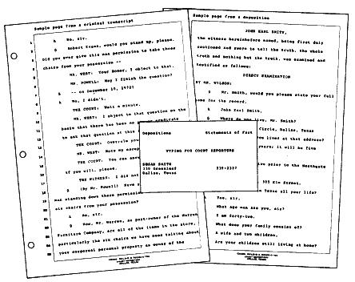
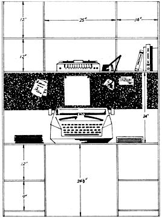
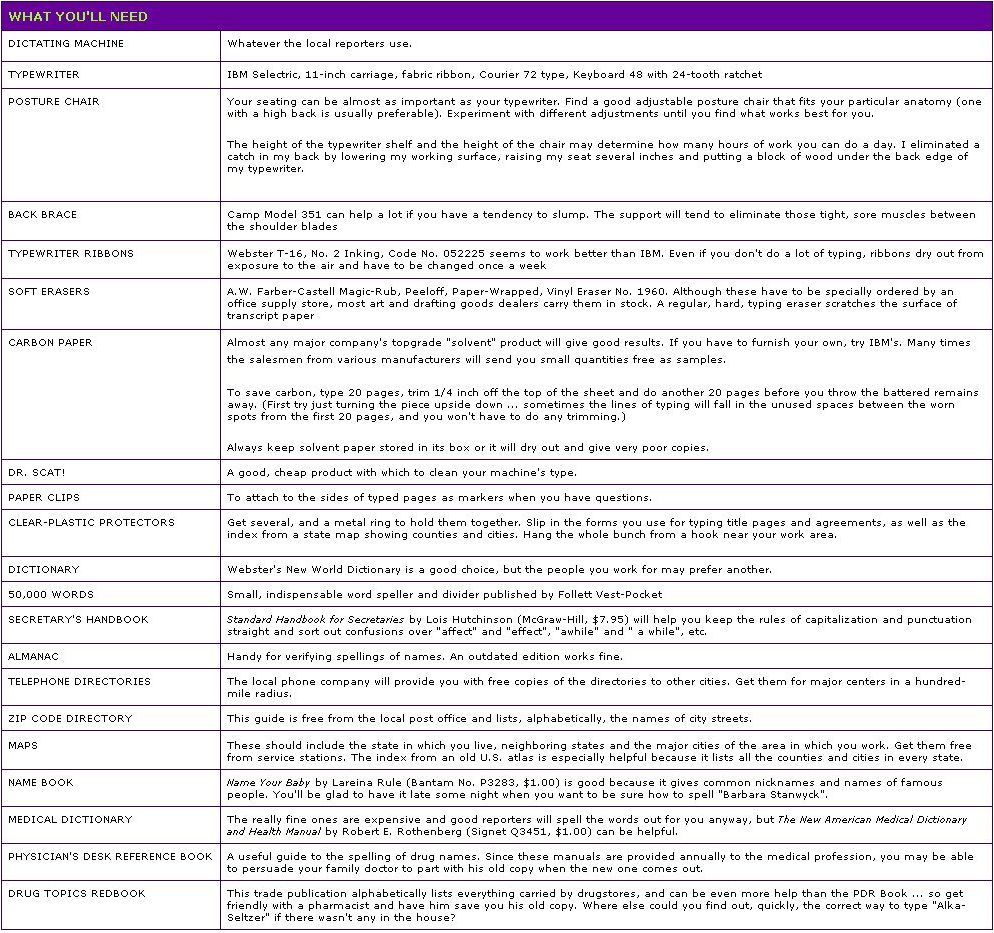

Here, for those who still dream of the Perfect Little Typing Business, is the one which ideally fills that bill for me. It's an almost unknown home enterprise that I find really interesting, it can be set up on a very modest investment and the steady income it generates can be adjusted up or down to fit nearly anyone's lifestyle. Perhaps best of all, from a MOTHER reader's point of view, this particular brand of self-employment-once it's established-can be operated most satisfactorily from the other half of The Dream: The Little Country Homestead.
The secret? Federal, state and county courts all employ reporters who take down their proceedings in a form of shorthand at speeds in excess of 200 words per minute. Some of these reporters then type up this information themselves. Most, however, prefer to dictate their notes onto tapes and have someone else transcribe them. This is the basis of a home typing business that can net from $300 to $1,000 a month, depending on how fast you work and how much time you want to spend at a typewriter. A few really greedy people make even more than the top figure I've quoted.
Remember as you read the information in this article, that it's based on the situation in Dallas, Texas. Conditions of employment as a court reporter's typist will vary somewhat from one area of the country to another, and between small towns and large urban centers. Transcribers in some other localities, for instance, are paid more per page and therefore earn more overall.
The current rate in Dallas is 30 cents a page for an original and two carbon copies. Which means that, to make $1,000 a month you'd have to type 3,334 pages ... or 111 every single day. A beginner who turns out eight to ten an hour would take 11 to 14 hours to produce that number. An experienced transcriber, however, can do 15 to 20 sheets an hour and could finish that same quota of 111 pages in six to eight hours.
Does that sound like easy money? It's not! To type a large number of pages requires sitting for long periods of time in one position. This often makes the body rebel with stiff, tight back and neck muscles that can be very painful. Before you count on earning a set income, then, you'd better attempt a trial run or two to find out how your anatomy reacts.
My usual schedule is four to five hours of work a day, five days a week. I always bill out at least $500 a month...and still have plenty of time to tend the chickens, the goats, the garden and two super-active little boys.
What are the qualifications for this profitable home business? Obviously, you have to know how to type-and the faster you go, the more pages you'll turn out-but beginning speed isn't as important as you might think. Just sitting there trying to do a few more sheets each hour for a number of months will build your rate more than you'd expect. Regardless of their proficiency at the start, most court reporters' typists hit 85 to 100 words a minute after a few years in the business.
What does matter is accuracy and a good vocabulary. If you can't recognize misspelled words you'll never make it in this field, however nimble your fingers. Whenever the reporter dictates an unfamiliar term, look it up to be sure. What sounds like "taret lathe" is actually "turret lathe". You've got to know the difference between "site", "sight" and "cite" . . . or "plural" and "pleural" . . . and be sure which to use where.
Apart from typing and spelling ability, general information-knowing a little bit about a lot of different things-is a great help. In one week you might work on transcripts that contain words like "roentgenogram", "diverticulosis" and "pleural cavity" (medical), "marquise" and "baguette" (a jeweler testifying in a robbery case) and "fracing", "acidizing" and "electric logs" (oil well drilling).
There's also the matter of temperament. You'll suffer through times when you loathe the sight of a typewriter ... so if you have trouble disciplining yourself and sticking to a schedule, you'd better forget typing at home. Foraging for wild grapes in the fence row may be more fun, but it doesn't bring in necessary cash. Too many days off will cause most businesses to collapse ... and this one is no exception.
Friends and family can also do you in if they fail to realize that-although you're working at home-you are working ... for money, not love. The greatest asset a domestic typing business can have is an understanding husband or friend who'll stack the dishes and herd the kids outside when you're pushing to finish a job. In some situations, a telephone that unplugs from a wall jack can also be a big help.
Your first and most important step in establishing this business, therefore, is to evaluate your individual circumstances. Can you really work at home without constant interruptions undermining your schedule? Can you say "no" and mean it when friends invite you to join them but there's a big job stacked up by your typewriter? Will your family cooperate? And, while you're sizing up your particular situation, don't omit an honest look at your spelling and vocabulary.
OK. If you do decide to give this enterprise a try, kick your efforts off by checking out the locality in which you live. Large metropolitan centers have many court reporters, while a rural area may have just one who covers the whole county (and quite likely isn't too busy to do his own typing). Your chances of finding work, then, are obviously better if you live in or close to a good-sized city.
One way to make useful contacts in the field is to ask your friends and neighbors whether they know a court reporter, or someone who types for court reporters. It definitely helps to have an "in", however slight it may seem. Just hanging around the courthouse and making yourself pleasant without being obnoxious can help.
You should also systematically check the phone book's Yellow Pages under "reporters". Then get a notebook and go to the local library to consult your particular state's Legal Directory. The volume should include a listing of all the members of the state Shorthand Reporters Association, arranged alphabetically under cities. Another section of the book will give the various federal and state courts and the name of the reporter assigned to each. Enter all this information in your notebook, with space for notations beside each name.
Next, type a stack of 3 X 5 index cards-they're inexpensive and harder to misplace in a desk drawer than a printed business card-with your name, address and phone number (see Fig. 1). Then, armed with the typed slips and your notebook, set out to make personal calls on local court reporters (starting at the nearest county courthouse). Check off the names on your list and keep a record of each person's response.
More often than not, the reporter you call on will already have a regular typist. Still, that typist may be planning unknown to her employer-to quit next month or to move away ... so strive to make a good impression and always try to leave one of your cards. (Note, by the way, that I'm referring to reporters as "he" and transcribers as "she" simply for convenience. Although this is the most common situation, some court employees are female ... and there's no reason why a good male typist shouldn't also turn his skill to money with my home business idea.)
If you think it will take time and effort to seek out potential employers in person, you're right ... but this is a much better approach than introducing yourself by phone. Many reporters have had unfortunate experiences with typists, and most get several calls a week from women who want to work at home. A personal visit is more businesslike and is remembered longer. It also gives you the opportunity to find out what kind of dictating apparatus your prospect uses and the type style and pitch (number of characters per inch) of his typewriter. All reporters in an area generally use the same sort of equipment, and you'll need this information when you arrange to rent a machine for your first jobs.
Another approach to the business-and probably the best-is through an experienced typist. One of the most skillful transcribers in the Dallas area charges a very reasonable fee for showing aspiring beginners what it's all about and for helping them get their first jobs.
And what if there's no such person in your own locality? Well, if a reporter tells you he has a good transcriber, you might ask for her name and telephone number. Don't be surprised, however, if your request for advice brings a negative response from the typist. If she's really top-notch, she may be too busy to take the time ... and if she's anything less, she may be too insecure to give prospective competition a helping hand. In the first case you might offer to pay for instructions. It's really worth the cost.
The long-range benefits of working for court reporters outweigh the difficulties you may have in getting started. If you have the perseverance to make a good transcriber, you'll eventually get your first job . . . and if you do reasonably well with it, you'll land a second and a third.
Most reporters are extremely nice people. Keep in mind, though, that your initial assignments may come from the one exception who's so picky and demanding that other typists don't want to work for him or her. Or your employer's dictation may be so sloppy that it's hard for you to do a good job. Just be pleasant, do the best you can and remind yourself that you're getting your foot in the door.
Basically, there are four types of reporters: federal, criminal, civil and free-lance. As a beginner you'll work for anybody who calls, but-as you gain experience and build a reputation as a good typist-you can be more selective. Here's some background information on your possible employers:
[1] Federal reporters are generally extremely busy and have a heavy workload.
[2] Civil reporters include those in domestic relations, juvenile, county and district courts. The first two categories handle very few transcripts. County court reporters normally record condemnation hearings. . . which are usually not very long and not the easiest to type because of all the figures they contain. District court transcripts seem to come in spurts so, unless your contact is able to take some depositions on the side, work in this area can be a feast-or-famine proposition.
[3] Free-lance reporters are not assigned to a court but take down depositions, conventions, directors' meetings, labor arbitrations, etc. Good ones stay very busy and can be hectic to work for. Still, such a person is a fine source of business if you plan to remain in his area and don't mind the pressure of having to get jobs out by a deadline.
I have continued to work for one free-lancer, since we moved to our homestead 65 miles east of Dallas, only because I like him so much and because my husband-who is still employed in the city-is willing to swing through the downtown area on his way home and pick up and deliver for me. When we reach the point where the town job is no longer necessary, I'll either have to give up the contact or go to Dallas myself once a week.
[4] Most typists like to deal with at least one reporter for the criminal courts for several reasons, one of which is the regularity of the work. When all the parties in a civil lawsuit are satisfied with the verdict, there is no appeal and nothing to type. Very few people found guilty of crimes, however, are content with the judgment ... and most of them are indigent. Still, they have the right to appeal and the state must provide the trial transcripts. This means a steady flow of work to the typist (if the reporter keeps up with his dictation).
Another advantage of criminal transcripts is that they're generally easy to type. The only technical jargon deals with autopsies, ballistics and laboratory analysis of drugs ... and the terms can be learned quickly.
If you want to work at some distance from the city, the biggest plus of transcribing criminal proceedings is that there's seldom a push to get out the work. You can just plug along on your own schedule with no rush or pressure. In fact, if you type for criminal reporters, you may have to make only one trip a month to pick up and deliver work. Two such employers would keep the average typist busier than she wants to be (unless she's trying to be the sole support of a large family).
It's a good idea to keep your ear to the grapevine and gradually build a group of contacts that will fit your lifestyle and plans for the future. The last year we lived in Dallas I added one new criminal reporter and gave up three other court reporters to get the workload I wanted when we moved to the country.
A reporter will furnish transcript paper that is specially treated to erase easily. Usually he also provides carbon paper and sometimes-if you're working exclusively for him-a typewriter and/or dictating machine.
Your employer's dictation should be clear and distinct (Donald Duck sound effects will drive any typist to desperation). As a beginner you may not have much choice, but as soon as you can, seek out clients who care enough to do a thorough job on their tapes. Good reporters, for instance, dictate "have" as "hayve" to distinguish it from "has" and "had". They emphasize the "-ed" endings on words and spell out unusual names and terms so you don't have to waste your time trying to look them up.
When you start working for a new person, inquire how he prefers to be billed: by the job, by the week, by the month. He won't mind your asking, and thereafter you'll know what to expect.
Usually your contact will choose to pay you when you deliver the completed transcript. In that case be sure to put your bill in the box ... right on top of the finished job. Some typists order printed invoices that look very proper, but-if you're working for the same two or three people all the time-yellow "second sheets" do as well, are a whole lot cheaper and show up nicely in a carton of white transcript paper. Reporters, by the way, are extremely good about paying their typists promptly. I don't know of a single transcriber who's ever been ripped off.
Court reporters classify only a few acts as unforgivable sins. Sloppy, inaccurate typing is Number One. Number Two is promising finished work by a certain time and failing to deliver.
Never commit yourself to get a typing job out unless you're positive you can meet your employer's deadline. It's better to overestimate the time required and finish sooner. And don't take on an extra job from a new source without making sure you can still get out the work for your regular bread-and-butter people.
Always take the time and expend the effort necessary to ensure utmost accuracy in your work ... even if it means repeatedly telephoning a client. Reporters are very patient about phone calls. They'd rather you ring them up twenty times a day than send back inaccurate work.
Do make every effort to learn the personal styles and idiosyncrasies of each of your reporters. I type for a man who dictates "Period straight ahead" to indicate the end of one sentence and the beginning of the next. Once a new typist did a job for him ... and each time that expression occurred she rendered it as "Pistons in the head". It's hard to imagine anybody not noticing that the phrase didn't seem to fit the context of the deposition. Nevertheless this is a true story, and almost every reporter has some similar tale about a transcriber who didn't use plain old common sense.
By all means, rent your dictating machine and typewriter the first few months so you can be sure this business suits you before you commit yourself to buying new equipment. The make to ask for is IBM, the only typewriter which can be fitted with a ratchet that will correctly space copy on the transcript paper. Most rental firms are very obliging about putting this device on the machine you hire. Once you've done several jobs and find you have a steady flow of work coming in, you'll want to get your own typewriter. Most rented machines leave something to be desired, and in any case-when you know you like this line of work-the money you spend for rental may as well go toward payments on your own (new) equipment.
Your decision to take this step means you'll be dealing with IBM . . . and that's an experience in itself. The company's representatives are super-smooth super-salesmen who have to be handled in a positive way. Some of them are not familiar with the kind of work court reporters do and will try to sell you everything in the book except what you really need. Knowing what you want and being very definite about it can eliminate some of the hassle.
One problem in your negotiations with IBM is that the firm can't be sure you're a serious sales prospect when you ask to have a demonstrator machine brought to your house. Many women who make this request are interested only in getting a typewriter to use for a personal project (typing hubby's thesis, for instance) and really have no intention of buying.
About models: The IBM Selectric is smaller, vibrates less and is more trouble-free than a standard office typewriter. Because it's not as heavy as the standard, it doesn't print as dark and you'll have to change the ribbon about once a week to keep your work looking fresh. The Selectric also has a "quicker" touch which is preferred by fast typists. Contrary to what the salesman will tell you, however, it is possible to type faster than the device can operate. Still, in spite of its little quirks, almost all typists prefer and use the IBM Selectric.
The plain vanilla Selectric sells for about $495. For an extra $95.00 you can order a court reporter's model that has three special keys (one of which is the question mark in lower case).
This machine can also be ordered in nine-pitch ... which simply means that you get nine letters to the inch rather than ten or twelve. In terms of earning power, it means that for every ten pages you type in ten-pitch, a nine-pitch typewriter will give you eleven. Without actually doing any more work, then, you end up with enough extra pages to cover your monthly payment to IBM. Unless it's forbidden by the court regulations, most reporters prefer the nine-pitch because more sheets mean more money for them, too.
Salesmen take more orders for carbon ribbon than for fabric ribbon Selectrics. Most office secretaries, however, don't type a fraction of the daily linage hammered out by a court reporter's typist and the cost of using carbon ribbons for such work is out of sight. Fabric also gives much better results on erasable paper.
When you're ready to order your typewriter, be very definite that you're doing so on condition that the salesman furnishes you with a machine equipped with the necessary ratchet. Some representatives will conveniently "forget" this detail because they don't want to charge their accounts with the cost of having the service department make the change. Take no chances. Be sure the agent brings the modified typewriter with him when he comes to close the deal. Insist: No machine, no down payment.
Orders are not always filled as fast as IBM salesmen promise (especially on a custom article like the court reporter's model) and you'll wind up paying for a rental typewriter while you wait unless you demand a loaner machine from IBM. Since placing the order entitles you to this service, make sure you get it.
How you pay for your typewriter will depend on your financial standing. With 20% down and established credit, IBM will carry the account themselves for a reasonable finance charge. The payments run around $25.00 a month for two years. Your new typewriter is under warranty for 90 days. Thereafter IBM will encourage you to place it on a service contract. You'll be sorry if you don't ... one maintenance call without such an arrangement costs almost as much as a whole year of the package deal. IBM servicemen are angels in business suits who come with remarkable speed and efficiency and are dedicated to keeping the customer (you) happy. They make necessary adjustments and replace worn parts ... and all this work is covered by the service contract. Incidentally, if you have a good serviceman, drop a note to his department manager. Such commendations will go on your friend's record and help him get raises and promotions.
I've tried several different office arrangements and found that the one in Fig. 1 seems best. Of course, you can improvise with TV trays and card tables and a small typing stand, but my present setup is hard to beat for efficiency.
My home office space-which is easily built from 1 X 12's and a scrap of plywood-provides lots of storage for reference books and supplies of transcript sheets. The fresh paper is kept in an open-ended box at the right. I just slip in the proper number of carbons, type the page and pull out the carbons with my right hand while laying the typed pages in a container to the left.
Keeping the dictating machine on the shelf above the desk cuts down on the use of floor space and gives me a chance to stand up and stretch while I change its tapes. The cork board behind the typewriter is handy for tacking up word lists and notes.
Normally, a home typist is considered a self-employed person ... which means that-since no one is deducting social security payments for you-you must pay a self-employment tax figured at the rate of .075 when you file your federal return. That's about double the percentage applied to an employee's paycheck.
Under your new tax status you're supposed to file quarterly returns on April 15, July 15, October 15 and January 15. If you're accustomed to having withholding taxes and social security painlessly extracted by an employer, these occasions can sour your outlook for weeks. The best way to make sure you'll have the money is to deduct 20% from each check you receive and put it into a special account. (The percentage is easy and quick to compute and the extra that isn't used for taxes will go to pay other business expenses.) This method helps you avoid a lot of rebellious feelings about a system you've got to live with.
It's only sensible, of course, to pay no more tax than you have to. Read up on the deductions the IRS permits for a business operated at home. Keep accurate records of all supplies you purchase as well as of the number of miles you drive to pick up and deliver work. When you buy a new or used typewriter or dictating machine, be sure to file Form 3468 and claim the investment credit deduction for the year in which you purchase the equipment.
It takes time and effort to get started in any enterprise, and this one is no exception. Although every transcriber I know began in a different way, most agree that getting the first job was their biggest hurdle. Accurate typing, common sense and reliability seem to be in short supply, however, and there's a constant demand for competent typists ... so you'll find no lack of work once you're established.
Few home businesses offer the steadiness and flexibility of typing for court reporters ... and few can be launched for such a small investment. (Down payments on a typewriter and dictating machine shouldn't be more than $150 and the monthly installments are reasonable. The only overhead is for ribbons and erasers.) And finally, how many paying propositions can be conducted so easily from a peaceful country hillside 65 miles from the nearest city?
|
Gail Williams, author of this article and experienced typist for court reporters, likes to organize her work space this way. Fresh paper is placed to the right of her typewriter and, as she finishes each sheet, Gail stacks it on her left. Special notes and other ""don't forget "" material is pinned to the cork board immediately behind her IBM Selectric and Gail likes to keep her dictating machine just above that. There's plenty of room for reference books and other supplies in the spacious cubby holes above and below Ms. Williams' work surface. |
 |
 |
|
 |
|
|